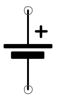
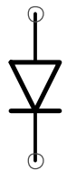
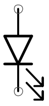
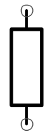
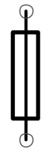
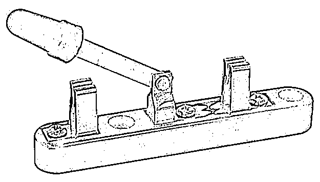
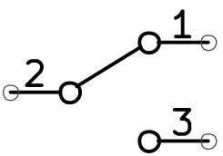

Elektronische componenten
Hier vind je uitleg over de belangrijkste basiscomponenten die we nodig hebben bij het gebruik van microcontrollers of om de werking te beschrijven.
DC Spanningsbron
Symbool: 
De spanningsbron is de voeding voor je microcontroller. Dit kan een batterij zijn, een adapter of de USB-poort van je computer.
Diode
Symbool: 
Een diode laat stroom maar in één richting door. Zoals het in dit symbool staat, kan de stroom van boven naar onder stromen maar niet omgekeerd.
LED (Light Emitting Diode)
Symbool: 
Een LED is een speciale diode, ze geeft licht als er voldoende stroom doorheen gaat. Gebruik altijd een serieweerstand om ervoor te zorgen dat er niet te veel stroom doorheen vloeit! Dan kan de LED of de uitgang van de microcontroller immers kapot gaan.
Weerstand
Symbool: 
Een weerstand beperkt de stroom in een circuit. Dit hebben we bijvoorbeeld nodig bij het aansluiten van een LED!
Zekering (Fuse)
Symbool: 
Een zekering beschermt tegen te hoge stroom. Wanneer de stroom te groot wordt, zal de zekering gecontrolleerd doorbranden. Let op: een zekering is geen weerstand, vele leerlingen tekenen een weerstand met het symbool van een zekering maar dat is helemaal verkeerd!
Schakelaar (SPDT)
- Afbeelding: 
- Symbool: 
Met een SPDT (Single Pole Dual Throw) schakelaar of tuimelschakelaar, kan je kiezen of hoe "middelste" contact verbonden wordt. In het model op de foto, kan je zorgen dat het met geen van beiden contact maakt maar dit kan meestal niet. Het is ofwel verbonden met het ene, ofwel met het andere en daar zit slechts een zeer korte "dode tijd" tussen. Deze schakelaar komt later terug bij GPIO output.